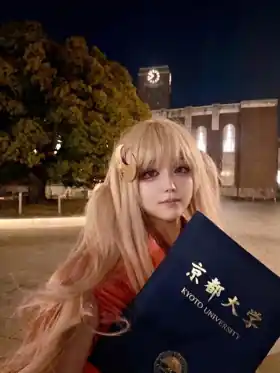

RESEARCH / CURRENT
日语学习者的口语表达支持
目前结合语音、语言与视觉情境理解，研究如何支持日语学习者的自发口语表达。本科阶段完成的情绪变化轨迹可控视频摘要研究已被 APSIPA ASC 2026 录用。
第一作者论文 · APSIPA ASC 2026 · 录用日语发音多维度评价方法研发

UTOKYO EEIS / MINEMATSU–SAITO LAB
刘可惟
语音语言处理 · 多模态交互教育研发
现就读于东京大学工学系研究科电气系工学专攻硕士课程，在峯松・齋藤研究室研究日语学习者的自发口语表达支持。
Selected / 01—04
RESEARCH / CURRENT
目前结合语音、语言与视觉情境理解，研究如何支持日语学习者的自发口语表达。本科阶段完成的情绪变化轨迹可控视频摘要研究已被 APSIPA ASC 2026 录用。